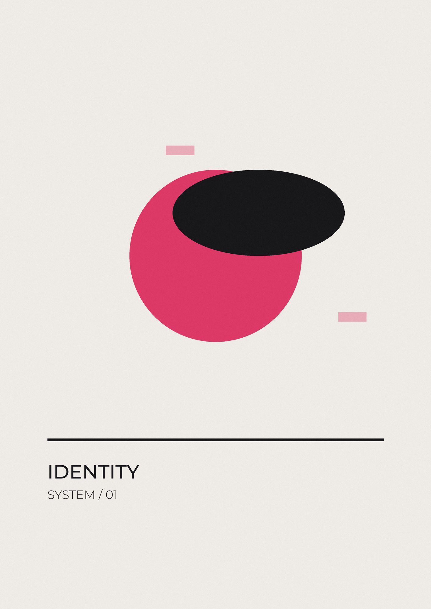
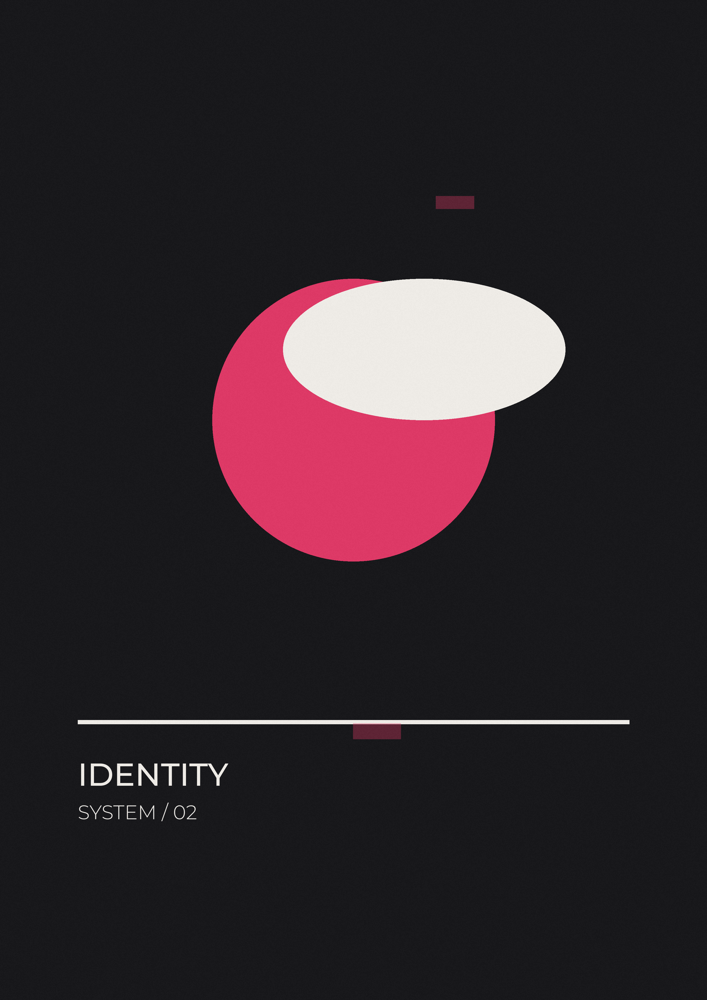
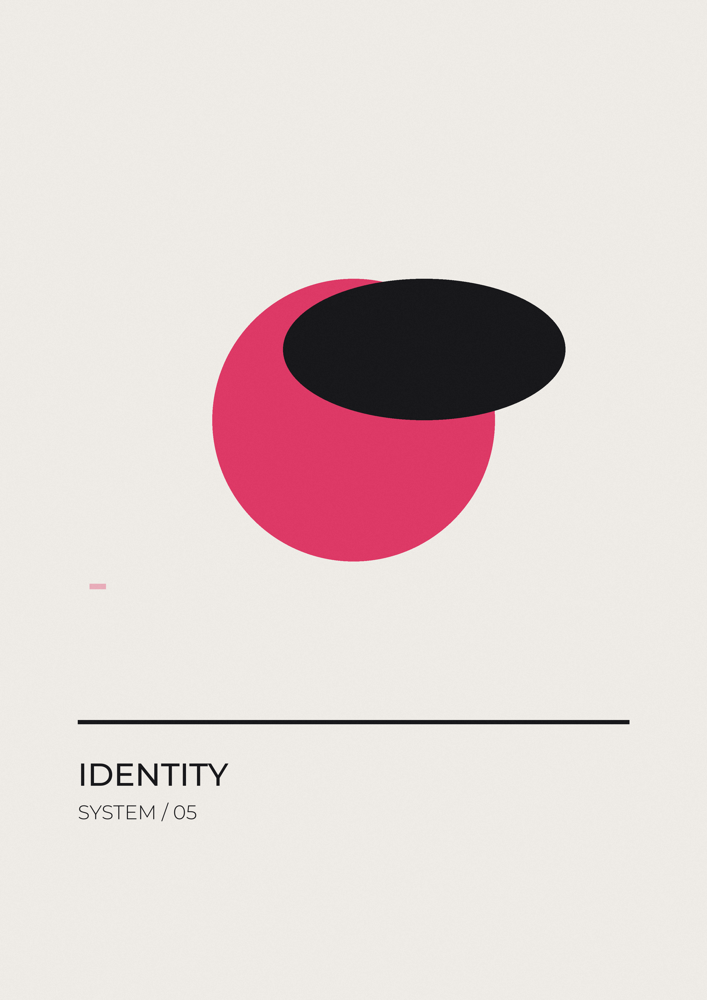

Kyma Coffee Roasters
A wordmark and packaging system for a small-batch roastery in Thessaloniki, built around the shape a wave leaves in sand.

The brief asked for something that would hold its own on a shelf of loud speciality coffee, without shouting back.
The mark is drawn from a single unbroken stroke, so it reads at any size: embossed on a cup sleeve, stamped on a sack, or thirty pixels wide in a delivery app. Everything else in the system is quiet by design, which lets the roast colour do the work of telling the blends apart.

